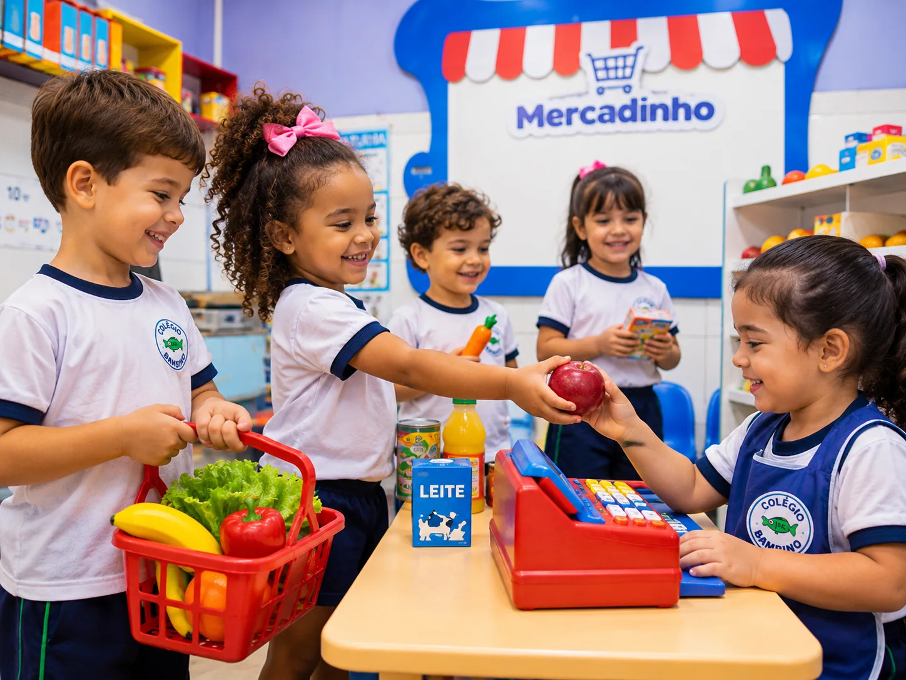
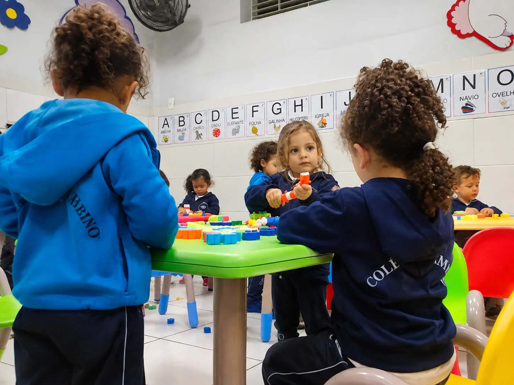
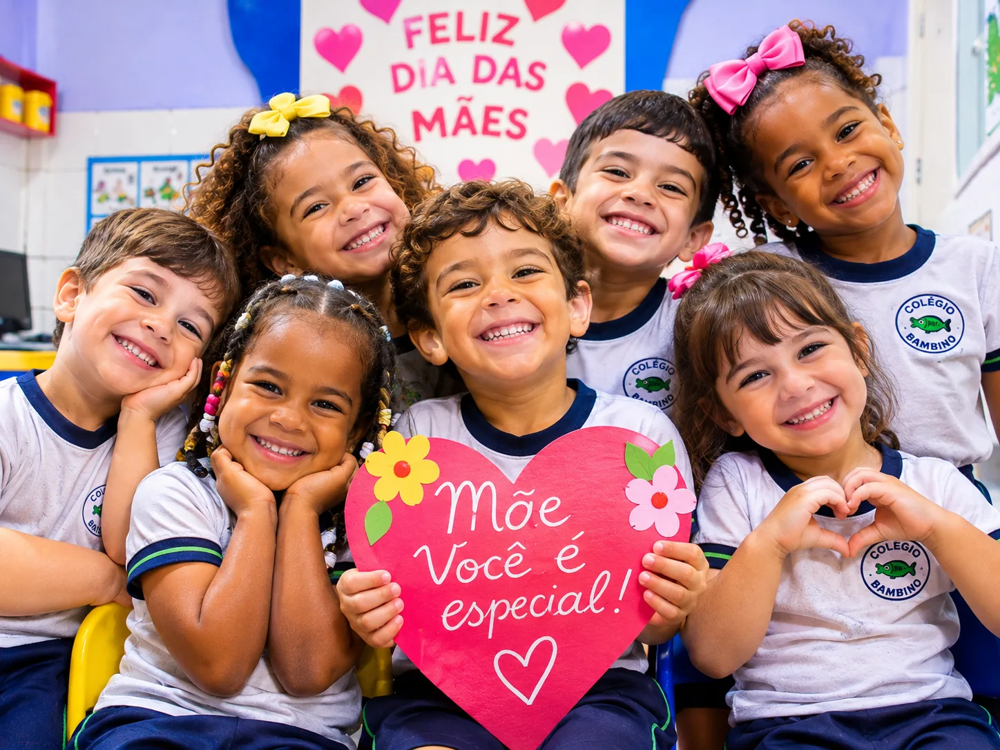
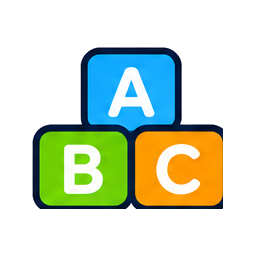

PRÉ I E PRÉ II
Imaginar, investigar e aprender: a infância segue em movimento.
No Pré I e no Pré II, as crianças ampliam suas formas de comunicar, brincar, conviver e compreender o mundo. Histórias, jogos, artes, música e investigação criam oportunidades de aprender com significado.

APRENDIZAGEM COM SENTIDO
Linguagem, curiosidade e novas conexões.
Contação de histórias, leitura compartilhada, brincadeiras com palavras e experiências de exploração ajudam a ampliar repertório e formas de expressão. O planejamento considera o desenvolvimento integral e a proposta COC.
Movimento e convivência

Laços e expressão
Do Pré I ao Pré II, aprender tem sentido.
Com o apoio do Sistema COC e a experiência construída ao longo de quatro décadas, a proposta reúne histórias, linguagem, raciocínio, investigações, brincadeiras e convivência — sem antecipar ou apressar a infância.
CADA ETAPA NO SEU TEMPO
Preparar para novos desafios sem apressar a infância.
A pré-escola amplia autonomia, convivência, linguagem e raciocínio em experiências próprias da infância. Assim, cada criança desenvolve recursos importantes para viver as próximas etapas de sua trajetória escolar.

Pré I
Descobertas, linguagem, arte e brincadeiras compartilhadas.
Pré II
Novas experiências que fortalecem convivência, raciocínio e autonomia.